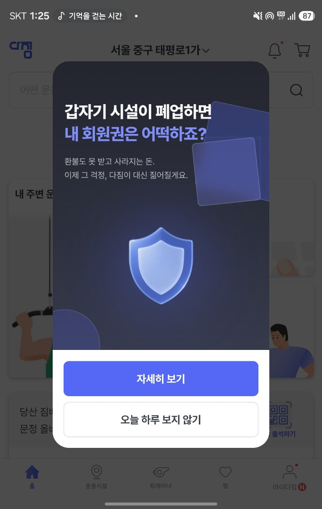

다짐 B2B 서비스 — 기업 복지 운동시설 제공 플랫폼
프로젝트 Overview
기업 복지가 확대되면서 운동시설 계약·제공형 복지가 빠르게 늘고 있지만, 실제 운영 단계에서는 직원 경험과 기업 관리 모두에서 구조적 한계가 드러나고 있었습니다. 단순 계약 중개를 넘어, 안전하고 투명한 B2B 이용 구조가 필요한 시점이었습니다.
이에 따라 기업·직원·시설이 모두 이해득실을 가질 수 있는 B2B 서비스를 신규 기획하고, TF를 구성해 서비스 설계부터 개발·배포·운영 프로세스 정립까지 전 과정을 수행했습니다.
핵심 Pain Point
- 운동시설 이용 과정에서 프라이버시가 보장되지 않아 직원이 복지를 기꺼이 사용하지 못하는 문제
- 퇴근 후 동일 시설 이용 시 동료에게 원치 않게 노출되는 직장인 특유의 이용 부담
- 지원금 선결제 후 청구 구조에서 결제 취소를 통한 편취가 반복되는 운영 리스크
- 기업이 복지 예산·이용 현황·정산 흐름을 실시간으로 통제하기 어려운 관리 한계
프로젝트 접근
문제의 본질은 '운동시설을 연결해주는 것'이 아니라, 기업 복지가 안전하게 운영되는 구조를 만드는 것이었습니다. 이를 기준으로 서비스 흐름, 결제 구조, 운영 정책을 재설계했습니다.
기업은 예산과 리스크를 관리하고, 직원은 프라이버시를 지키며 이용하고, 시설은 안정적으로 거래할 수 있는 3자 모두에게 이로운 B2B 복지 인프라를 목표로 설계했습니다.
담당 역할 (PM)
서비스 기획
B2B 복지 구조 설계 및 요구사항 정의
개발 리딩
기능 우선순위 설정 및 실행 관리
배포·운영
런칭 전략 수립 및 운영 프로세스 구축
TF 총괄
유관 부서 협업 조율 및 의사결정 리딩
성과 및 Impact
- 구조적 리스크 해소 — 기존 복지 운영 방식의 편취·관리 공백을 서비스 구조로 해결
- 직원 이용 경험 개선 — 프라이버시와 편의성을 고려한 B2B 이용 환경 구축
- 기업 운영 효율화 — 복지 예산·이용·정산을 플랫폼 안에서 관리 가능한 구조 확립
- End-to-End 실행 — 기획 → 개발 → 배포까지 PM으로 전 과정 수행
단순 영업·운영을 넘어, 현장 Pain Point를 서비스로 전환한 문제 해결형 PM 프로젝트입니다.